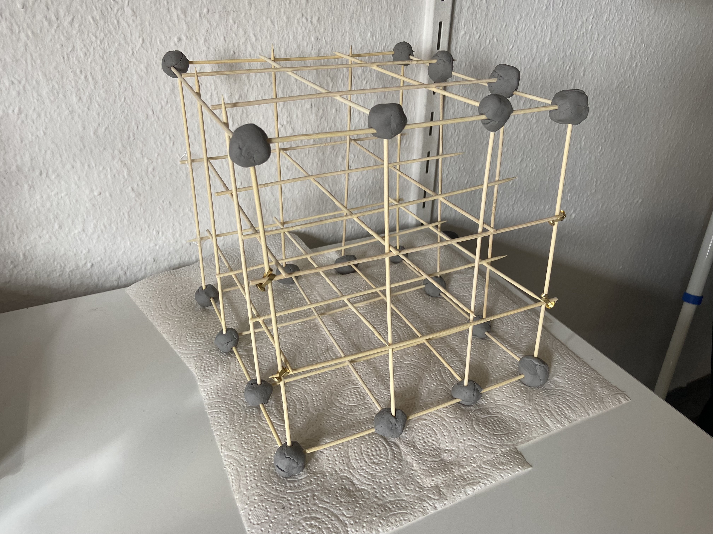
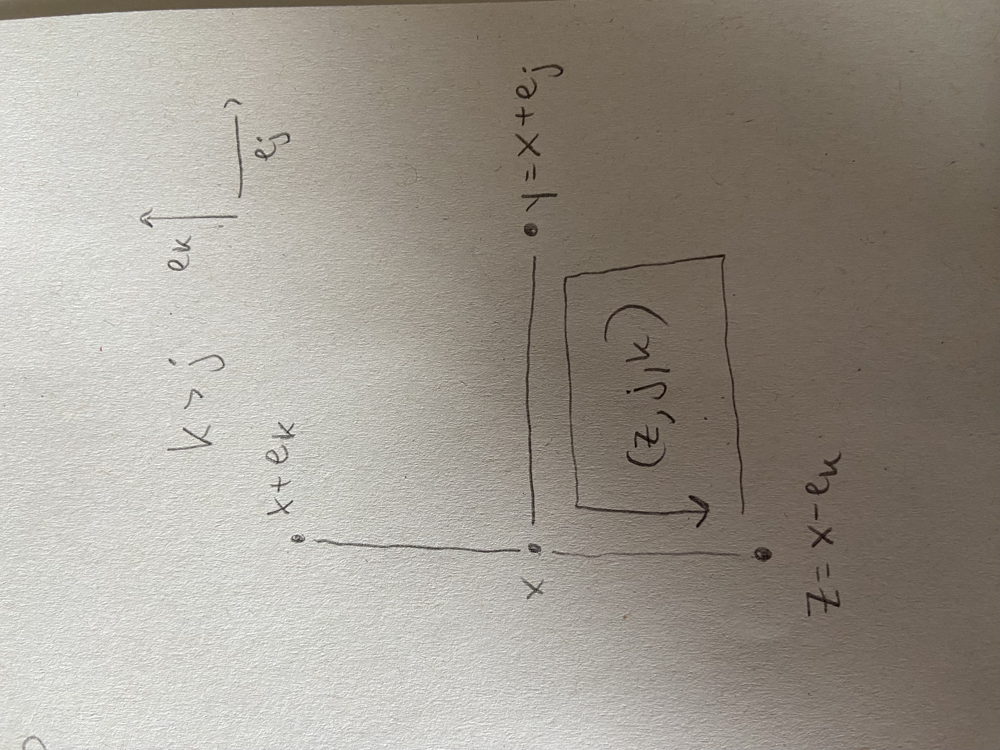

Yang-Mills Lattice Gauge Theory - William’s Explorations
March 25, 2026
Today I want to learn about Gaussian integration. The goals I have in mind are the following two statements. Suppose \(X = (X_1, \cdots, X_n)\) is a Gaussian distributed random vector, with distribution denoted by \(P_{X}\). Then \(\mathbb E (X_j) = \mu_j\) and \(Cov (X_j,X_k) = \Sigma_{j,k}\), where \(\mu \in \mathbb R^n\) and \(\Sigma \in \mathbb R^{n \times n}\) satisfy \[ \frac{dP_{X}}{d\lambda} (x) = \frac{1}{(2\pi)^{n/2} (\det \Sigma)^{1/2}} \exp \left( -\frac{1}{2}(x - \mu)^T \Sigma^{-1} (x - \mu) \right). \] To this end, I want to type out a crucial section, “Evaluation of an Integral” from Chapter 2: “Spectral Theory of Operators” in the textbook Friedman (1956). Then I’ll fill in some Whys? to aid my understanding of that section.
Evaluation of an Integral
“In order to illustrate the application of the theorems that have been proved about quadratic forms, we shall evaluate the following \(n\)-dimensional integrals: \[ I_1 = \int_{-\infty}^{\infty} \cdots \int_{-\infty}^{\infty} \exp \left[ i \sum_{k=1}^n t_kx_k - \sum_{i=1}^n \sum_{j=1}^n a_{ij}x_ix_j \right] dx_1 \cdots dx_n, \] \[ I_2 = \int_{-\infty}^{\infty} \cdots \int_{-\infty}^{\infty} F \left[ \sum_{k=1}^n t_kx_k \right] \exp \left[ - \sum_{i=1}^n \sum_{j=1}^n a_{ij}x_ix_j \right] dx_1 \cdots dx_n. \] Here \(F(u)\) is an arbitrary integrable function of the variable \(u\) over the interval \((-\infty, \infty)\). We assume that \(a_{ij} = a_{ji}\) and, in order to insure that the integrals converge, we also assume that the quadratic form in the exponent is positive-definite. Let \(A\) be the matrix whose elements are \(a_{ij}\), let \(x\) be the vector whose components are \(x_1, \cdots, x_n\), and let \(t\) be the vector whose components are \(t_1, \cdots, t_n\). Then the integrals \(I_1\) and \(I_2\) may be written as follows: \[ I_1 = \int \exp [i \langle t, x \rangle - \langle x, Ax \rangle] dx, \] \[ I_2 = \int F[\langle t, x \rangle] \exp [-\langle x, Ax \rangle] dx, \] where the integration is extended over the whole \(n\)-dimensional space.
Before evaluating \(I_1\) and \(I_2\), we shall derive the following well-known result (2.45): \[ J = \int_{-\infty}^{\infty} e^{-at^2} dt = (\pi/a)^{1/2}. \] The proof of this follows from the fact that \[ J^2 = \int_{-\infty}^\infty e^{-at^2} dt \int_{-\infty}^\infty e^{-as^2} ds = \int \int e^{-a(s^2 + t^2)} ds \, dt, \] and by a transformation to polar coordinates, \[ J^2 = \int_0^{2\pi} \int_0^\infty e^{-ar^2} r \, dr \, d\theta = \pi/a. \] Now let \(P\) be the orthogonal transformation with determinant one (Problem 2.30) that diagonalizes \(A\) so that \[ P^* A P = D, \] \(D\) being a diagonal matrix with elements \(\lambda_1, \cdots, \lambda_n\) all greater than zero. Put \(x = Py\); then \[ I_1 = \int \exp [i \langle P^* t, y \rangle - \langle y, Dy \rangle]dy, \] \[ I_2 = \int F[\langle P^* t, y \rangle] \exp [- \langle y, Dy \rangle] \, dy, \] where the integration is again extended over the whole \(n\)-dimensional space. Note that the Jacobian of the transformation from the \(x\)-coordinates to the \(y\)-coordinates is one, since the determinant of \(P\) is one.”
Why?
I want to show that the equality \[ \int F[\langle t, x \rangle] \exp [-\langle x, Ax \rangle] dx = \int F[\langle P^* t, y \rangle] \exp [- \langle y, Dy \rangle] \, dy \] follows from my understanding of the change of variables formula. Let me use the formula \[ \int_{\Omega_1} f(x) d\mu_1(x) = \int_{T(\Omega_1)} f \circ T^{-1} (y)\, dT_* \mu_1(y) \] where \(T_*\mu_1(B) = \mu_1(T^{-1}(B))\) for \(B \subset \Omega_2\), and \(T: \Omega_1 \to \Omega_2\).
We have \[f(\cdot) = F[\langle t, \cdot \rangle] \exp[-\langle \cdot, A(\cdot) \rangle].\] Let \(L_P: \mathbb R^n \to \mathbb R^n\) be the linear map \[ L_P(u) = Pu \] and similarly for \(L_{P^*}\). I only add this notation because when we need the determinant of the derivative of the map \(x \mapsto Px\), it’ll be more clear to write \(\partial L_P\) rather than \(\partial P\), where \(\partial\) denotes the total derivative, since \(D\) is already taken in the notation. We have \[T( \cdot ) = L_{P^*}(\cdot).\] Hence, \[T^{-1}(\cdot) = L_P (\cdot).\] Then the formula reads \[\begin{align*} \int F[\langle t, x \rangle] \exp [-\langle x, Ax \rangle] dx &= \int f(x) d\mu_1(x) \\ &= \int f \circ T^{-1} (y)\, dT_* \mu_1(y) \\ &= \int f(Py) \, dT_* \mu_1(y) \\ &= \int F[\langle t, Py \rangle] \exp[-\langle Py, APy \rangle] \, dT_* \mu_1(y)\\ &= \int F[\langle P^* t, y \rangle] \exp[-\langle y, P^* APy \rangle] \, dT_* \mu_1(y)\\ &= \int F[\langle P^* t, y \rangle] \exp[-\langle y, Dy \rangle] \, dT_* \mu_1(y)\\ \end{align*}\]
To finish this off, note that \[ \frac{dT_* \mu_1}{dLeb}(y) = |\det \partial|_y T^{-1}| = |\det P| = 1, \] so that by definition of densities, we have \[ \int F[\langle P^* t, y \rangle] \exp[-\langle y, Dy \rangle] \, dT_* \mu_1(y) = \int F[\langle P^* t, y \rangle] \exp[-\langle y, Dy \rangle] dy. \]
Back to Friedman:
“Put \(y = D^{-1/2} z\). The matrix \(D^{-1/2}\) is the diagonal matrix whose elements are the reciprocal of the positive square root of the elements of \(D\). Then \[ I_1 = (\det D)^{-1/2} \int \exp [i \langle D^{-1/2} P^*t, z \rangle - \langle z, z \rangle] dz, \] \[ I_2 = (\det D)^{-1/2} \int F[\langle D^{-1/2} P^* t, z \rangle] \exp[-\langle z, z \rangle ] dz. \] The integration is still over the entire \(n\)-dimensional space.”
Why?
I want to practice change of variables again, for \(I_2\).
Let \(T\) denote the map \(y \mapsto D^{1/2}y = z\). Then \(T^{-1}\) is the map \(z \mapsto D^{-1/2}z = y\). Also, let \(f(\cdot) = F[\langle P^* t, \cdot \rangle] \exp[-\langle \cdot, D(\cdot) \rangle].\) Then the transformation formula and the Radon Nikodym derivative reads: \[\begin{align*} \int f(y) \, dLeb(y) &= \int f \circ T^{-1}(z) \, (dT_* Leb)(z)\\ &= \int f(D^{-1/2}z) \, (dT_* Leb)(z)\\ &= \int f(D^{-1/2}z) \, \frac{dT_* Leb}{dLeb(z)} dLeb(z) \\ &= \int f(D^{-1/2}z) \, |\det \partial T^{-1}|_z| dz \\ &= \int f(D^{-1/2}z) \, |\det D^{-1/2}| dz \\ &= \int f(D^{-1/2}z) \, \left( \prod \frac{1}{\sqrt{\lambda_i}} \right) dz \\ &= (\det D)^{-1/2} \int f(D^{-1/2}z) \, dz \\ &= (\det D)^{-1/2} \int F[\langle P^* t, D^{-1/2}z \rangle] \exp[-\langle D^{-1/2}z, DD^{-1/2}z \rangle] \, dz \\ &= (\det D)^{-1/2} \int F[\langle D^{-1/2}P^* t, z \rangle] \exp[-\langle z, D^{-1/2}DD^{-1/2}z \rangle] \, dz \\ &= (\det D)^{-1/2} \int F[\langle D^{-1/2}P^* t, z \rangle] \exp[-\langle z, z \rangle] \, dz. \end{align*}\]
Back to Friedman, again.
“In evaluating \(I_1\), we shall try to complete the square in the exponent by putting \(z = w + b\) where \(w\) is a variable vector and \(b\) is a fixed vector. The exponent in \(I_1\) becomes \[ - \langle w, w \rangle - 2 \langle w, b \rangle - \langle b, b \rangle + i \langle s, w \rangle + i \langle s, b \rangle. \] Here we have written \(s\) for the vector \(D^{-1/2} P^* t\). If we put \(b = is/2\), the linear term in \(w\) will vanish and the exponent reduces to \[ - \langle w, w \rangle - \frac{\langle s, s \rangle}{4}. \] Using (2.45), we obtain \[\begin{align*} I_1 &= \det D^{-1/2} \exp [- \langle s, s \rangle / 4] \int \exp [- \langle w, w \rangle ] dw \\ &= (\pi)^{n/2} \det D^{-1/2} \cdot \exp [- \langle s, s \rangle / 4]. \end{align*}\] Now, by (2.44) (the determinant of a matrix is equal to the product of its eigenvalues), \[ \det D^{-1/2} = (\lambda_1 \cdots \lambda_n)^{-1/2} = (\det A)^{-1/2}, \] and then (2.46) \[ \langle s, s \rangle = \langle D^{-1/2} P^* t, D^{-1/2} P^* t \rangle = \langle t, PD^{-1}P^* t \rangle = \langle t, A^{-1} t \rangle \] since, from the definition of \(D\), \[ D^{-1} = P^{-1} A^{-1} (P^*)^{-1}. \] We have, finally, the following result (2.47): \[ I_1 = (\pi)^{n/2}(\det A)^{-1/2} \exp [- \langle t, A^{-1} t \rangle / 4]. \]
To complete the evaluation of \(I_2\), we rotate the coordinate axes so that the first axis lies along the direction of the vector \(s = D^{-1/2} P^* t.\) This rotation is the result of a transformation by an orthogonal matrix of determinant one. Let \(Q\) be this matrix and \(z = Qw\) the transformation; then \[ I_2 = \det D^{-1/2} \int F[\langle Q^* s, w \rangle] \exp [- \langle w, w \rangle] dw. \] Suppose that \(w_1, \cdots, w_n\) are the components of \(w\); then by definition of the transformation, \(Q^* s\) has only its first component (call it \(\alpha\)) different from zero; and hence \[ \langle Q^* s, w \rangle = \alpha w_1. \]
Why?
Let \(\vec{\cdot}\) denote abstract vectors in \(\mathbb R^n\).
Let \(\vec{w} \in \mathbb R^n\) be a vector which varies, as it is the vector variable of integration. Let \(\vec{s}\) be the vector whose components in the standard basis \(E = \{\vec{e_1}, \cdots, \vec{e_n} \}\) are \(M_E(\vec{s}) = s = D^{-1/2}P^*t.\) Here we use the notation \(M_E(\vec{s})\), seen on page 509 of Lang (2002).
Let \(f: \mathbb R^n \times \mathbb R^n \to \mathbb R\) be the standard form, that is, \(I_n = M_E^E(f) := (f(\vec{e_i},\vec{e_j}))_{i,j}\). Then if \(\vec{x}, \vec{y} \in \mathbb R^n\), it follows that \[ f(\vec{x}, \vec{y}) = M_E(\vec{x})^T M_E(\vec{y}). \] In fact, if \(B\) is any other orthonormal basis of \(\mathbb R^n\), we have that \(f(\vec{x}, \vec{y}) = M_B(\vec{x})^T M_B(\vec{y}).\) This follows from section 6 in Lang (2002) chapter 13. On the other hand, we interpret the symbol \(\langle \cdot, \cdot \rangle\) to be an in-coordinates version of \(f\). That is, \(\langle Q^* s, w \rangle\) just means \((Q^*s)^T w\).
Let \(L: \mathbb R^n \to \mathbb R^n\) be the linear map/ isometry that sends \(\vec{e_1} \mapsto \frac{\vec{s}}{\lVert \vec{s} \rVert}\) and otherwise preserves orthogonality. This is just rotating the usual axes of our \(n\)-dimensional space so that the first axis aligns with the vector \(\vec{s}\). Let \(id: \mathbb R^n \to \mathbb R^n\) be the identity map.
Furthermore, let \(r_1 = L(e_1), \cdots, r_n = L(e_n).\) Then \(R = (r_1, \cdots, r_n)\) forms a basis of \(\mathbb R^n\), and describes the new coordinate axes.
Then we have the following observations, which can be understood by looking at page 509 of Lang (2002):
\[\begin{align*} Q &= M_E^E(L) = M_E^R(id) \\ Q^* &= M_E^E(L^{-1}) = M_R^E(id). \end{align*}\]
Note that, in words, \(M_R^E(id)\) changes a vector written in \(E\)-coordinates to the same vector, but written in \(R\)-coordinates. That is, the superscript corresponds to the domain, and the subscript corresponds to the target. For example, if \(\vec{x}\) is arbitrary, then we have \[ M_R(\vec{x}) = M_R^E(id) M_E(\vec{x}). \]
Since \(\vec{r_1} = \frac{\vec{s}}{\lVert \vec{s} \rVert }\), we have that \[ M_R(\vec{s}) = \begin{bmatrix} \lVert s \rVert \\ 0 \\ \vdots \\ 0 \end{bmatrix}. \] In particular, \(Q^*s\) is just \(\vec{s}\) in \(R\)-coordinates, because \[ Q^*s = M_R^E(id) M_E(\vec{s}) = M_R(\vec{s}). \] As Friedman alludes to when he says “suppose that \(w_1, \cdots, w_n\) are the components of \(w\)” after already rotating the coordinate axes, we note that \[w = M_R(\vec{w}).\] In summary, we have shown that \(Q^*s\) are \(R\)-coordinates of the vector \(\vec{s}\) and \(w\) are the \(R\)-coordinates of the vector \(\vec{w}\). Since the first axis, \(\vec{r_1}\) is parallel to \(\vec{s}\) and all other axes \(\vec{r_j}\) for \(j \ne 1\) are perpendicular to \(\vec{s}\), we see that \[\begin{align*} f(\vec{s}, \vec{w}) &= \sum_{i=1}^n f(\vec{s}, w_i \vec{r_i}) \\ &= f(\vec{s},w_1 \vec{r_1}) \\ &= f(\lVert \vec{s} \rVert \vec{r_1}, w_1 \vec{r_1}) \\ &= \lVert \vec{s} \rVert w_1 f(\vec{r_1}, \vec{r_1})\\ &= \lVert \vec{s} \rVert w_1 && \text{def of orthonormal basis}. \end{align*}\]
But \(f(\vec{s}, \vec{w}) = M_R(\vec{s})^T M_R(\vec{w}) = (Q^* s)^T w = \langle Q^* s, w \rangle\), which shows that \(\langle Q^* s, w \rangle = \lVert \vec{s} \rVert w_1,\) as desired.
We can also interpret \(Q^*s\) and \(w\) as \(E\)-coordinates of some vectors. What are these vectors? Observe that \[ Q^*s = M_E^E(L^{-1}) M_E(\vec{s}) = M_E(L^{-1}\vec{s}), \] and since \(I_n = M_E^R(L^{-1}),\) \[ w = M_R(\vec{w}) = M_E^R(L^{-1}) M_R(\vec{w}) = M_E(L^{-1}\vec{w}). \] This shows that \(Q^*s\) are the \(E\)-coordinates for the vector \(L^{-1}\vec{s} \in \mathbb R^n\) and \(w\) are the \(E\)-coodinates for the vector \(L^{-1}\vec{w}\).
From here, we can also conclude that \(\langle Q^*s, w \rangle = \lVert s \rVert w_1.\)
Indeed, since \(L^{-1}\) is an isometry, \[\begin{align*} \lVert \vec{s} \rVert w_1 &= f(\vec{s}, \vec{w}) \\ &= f(L^{-1}\vec{s}, L^{-1}\vec{w}) \\ &= M_E(L^{-1}\vec{s})^T M_E(L^{-1}\vec{w})\\ &= \langle Q^* s, w \rangle, \end{align*}\] as desired.
Back to Friedman:
Finally, by integration over \(w_2, w_3, \cdots, w_n\) we find that (2.48) \[ I_2 = (\pi)^{(n-1)/2}(\det A)^{-1/2} \int_{-\infty}^\infty F(\alpha u) e^{-u^2} du, \] where \[ \alpha^2 = \langle Q^* s, Q^* s \rangle = \langle s, s \rangle = \langle t, A^{-1} t \rangle. \] We combine our results into - Theorem 2.21. If \(A\) is a positive definite self-adjoint matrix, then \[ \int \exp [i \langle t, x \rangle - \langle x, Ax \rangle] dx = (\pi)^{n/2}(\det A)^{-1/2} \exp [- \langle t, A^{-1} t \rangle / 4] \] and \[ \int F[\langle t, x \rangle] \exp [-\langle x, Ax \rangle] dx = (\pi)^{(n-1)/2}(\det A)^{-1/2} \int_{-\infty}^\infty F(\alpha u) e^{-u^2} du. \] Here the integrals on the left are extended over the entire \(n\)-dimensional space, and \[ \alpha^2 = \langle t, A^{-1} t \rangle. \]
Problem 2.37. Show that \[ \int_{-\infty}^{\infty} \cdots \int_{-\infty}^{\infty} x_k x_m \exp \left[ -\sum_i \sum_j a_{ij} x_i x_j \right] dx_1 \cdots dx_n = \frac{1}{2} \pi^{n/2} (\det A)^{-3/2} D_{km}, \] when \(D_{km}\) is the minor of \(a_{km}\) in the matrix \(A\). (Hint. Differentiate (2.47) with respect to \(t_k\) and \(t_m\) and then put \(t_1 = t_2 = \cdots = t_n = 0.\)) ”
March 24, 2026
We follow Chatterjee (2016) section 12 and 13.
Let \(\tau\) be a Gaussian measure on \(\mathbb R^n\). Let \(P: \mathbb R^n \to \mathbb R\) be the associated degree two polynomial, where \(P(x) = x^T Q x + v^T x + c\) for \(Q\) a positive definite symmetric matrix in \(\mathbb R^{n \times n}\), \(v \in \mathbb R^n\) a column vector, and \(c \in \mathbb R\). That is, \[ \frac{d\tau}{d\lambda}(x) = Ce^{-P(x)} d\lambda(x), \] where \(\lambda\) is Lebesgue measure on \(\mathbb R^n\), and \(C\) is some constant.
There is a standard way of writing the probability density function of a Gaussian measure on \(\mathbb R^n\), which is the following: \[ \frac{1}{(2\pi)^{n/2}(\det \Sigma)^{1/2}} \exp \left( -\frac{1}{2} (x-\mu)^T \Sigma^{-1} (x-\mu) \right). \] Here \(\Sigma\) is an \(n \times n\) positive definite (symmetric) matrix, \(\mu \in \mathbb R^n\), and \(\det \Sigma\) is the determinant of \(\Sigma\).
One question I have is: does \[ \mathbb R^n \ni x \mapsto (x-\mu)^T \Sigma^{-1} (x-\mu) \in \mathbb R \] define a symmetric bilinear form (via the diagonal)?
- Lemma. If \(\Sigma \in \mathbb R^{n \times n}\) is symmetric, then \(\Sigma^{-1}\) is also symmetric.
Proof. For a given \(n \times n\) matrix \(A\), let \(A_{ij}\) denote the \((n-1) \times (n-1)\) matrix obtained from \(A\) by removing the \(i\)th row and the \(j\)th column. Let \(b_{ij} = (-1)^{i+j} \det \Sigma_{ji}\), for \((i,j) \in [n]^2\). Then by Proposition 4.16 in Chapter XIII of Lang (2002), it follows that \(\Sigma^{-1} = \frac{1}{\det \Sigma} [b_{ij}]_{i,j \in [n]^2}.\) We want to confirm that \(b_{ij} = b_{ji}\), because this would imply that \(\Sigma^{-1} = (\Sigma^{-1})^T.\) To this end, note that \(\Sigma = \Sigma^T\) implies that \(\Sigma_{ij} = \Sigma_{ji}^T\). This is not so easy to see in my opinion, but doing an example with a 5 by 5 symmetric matrix is convincing. Otherwise one could proceed with a case analysis. Since \(\det\) is invariant under taking the transpose, it follows that \(\det(\Sigma_{ij}) = \det(\Sigma_{ji}^T) = \det(\Sigma_{ji})\), so we conclude that \(b_{ij} = b_{ji}\). q.e.d.
- Lemma. Let \(Q \in \mathbb R^{n \times n}\) be symmetric and invertible. Then \((Q^{-1})^T = (Q^T)^{-1}.\)
Proof. Since \(Q\) is symmetric, then by the above lemma \(Q^{-1} = (Q^{-1})^T\). But \(Q = Q^T\), so by substitution under the inverse sign on the left hand side of the equation \(Q^{-1} = (Q^{-1})^T\), we see that \((Q^{T})^{-1} = (Q^{-1})^T\). q.e.d.
Note that \((A^T)^{-1} = (A^{-1})^T\) holds for all suitably sized matrices \(A\) in a commutative ring \(R\) (exercise 2(a) Chater XIII Lang (2002)).
- Lemma. Let \(Q \in \mathbb R^{n \times n}\) be symmetric and let \(x, \mu \in \mathbb R^n\) be column vectors. Then \[ (x - \mu)^T Q (x - \mu) = x^T Q x -2 \mu^T Q x + \mu^T Q\mu. \]
Proof. Observe that the map \[ f(x,y): \mathbb R^n \times \mathbb R^n \ni (x,y) \mapsto x^TQy \in \mathbb R \] is a symmetric bilinear form. Hence, \[\begin{align*} (x - \mu)^T Q (x - \mu) &= f(x - \mu, x - \mu)\\ &= f(x,x) - 2f(\mu, x) + f(\mu, \mu) \\ &= x^T Q x -2 \mu^T Q x + \mu^T Q\mu, \end{align*}\] as desired. q.e.d.
- Lemma. Let \(\tau\) be a Gaussian measure on \(\mathbb R^n\) with associated polynomial data \((P, Q, v, c),\) as above. Then the density function \(Ce^{-P(x)}\) of \(\tau\) with respect to Lebesgue measure can be written in the standard format by setting \[ \Sigma := \frac{1}{2}Q^{-1} \text{ and } \mu := -\frac{1}{2} Q^{-1} v, \] and assuming that \[ C \exp(-c) = \frac{1}{(2\pi)^{n/2}(\det (\frac{1}{2} Q^{-1})^{1/2}} \exp \left( -\frac{1}{4} v^T Q^{-1} v \right) \]
Proof. First note that \(\Sigma^{-1} = 2Q\) is symmetric, since \(Q\) is symmetric. Then by the previous lemma, \[\begin{align*} \exp \left( -\frac{1}{2} (x-\mu)^T \Sigma^{-1} (x-\mu) \right) &= \exp \left( - (x-\mu)^T Q (x-\mu) \right) \\ &= \exp \left( -x^T Q x + 2 \mu^T Q x - \mu^T Q\mu \right) \end{align*}\]
Next, note that \[\begin{align*} \mu^T &= (-\frac{1}{2} Q^{-1} v)^T \\ &= -\frac{1}{2} v^T (Q^{-1})^T \\ &= - \frac{1}{2} v^T (Q^T)^{-1} \\ &= - \frac{1}{2} v^T Q^{-1} && Q \text{ is symmetric}. \end{align*}\]
Then returning to the earlier equations, we have \[\begin{align*} \exp \left( -x^T Q x + 2 \mu^T Q x - \mu^T Q\mu \right) &= \exp \left( -x^T Q x - v^T x - \frac{1}{4}v^T Q^{-1} v \right) \end{align*}\]
Then multiplying the equation \[ \exp \left( -\frac{1}{2} (x-\mu)^T \Sigma^{-1} (x-\mu) \right) = \exp \left( -x^T Q x - v^T x - \frac{1}{4}v^T Q^{-1} v \right) \] by \(\frac{1}{(2\pi)^{n/2}(\det (\frac{1}{2} Q^{-1})^{1/2}}\) shows that \[ \frac{1}{(2\pi)^{n/2}(\det \Sigma)^{1/2}} \exp \left( -\frac{1}{2} (x-\mu)^T \Sigma^{-1} (x-\mu) \right) = Ce^{-P(x)}, \] as desired. q.e.d.
March 20, 2026
Determinants of Matrices Indexed by Objects other than numbers
I want to follow Lang (2002) section “Determinants” but replace matrices \((a_{ij})_{(i,j \in [n]^2)}\) by \((a_{i,j})_{i,j \in E^2}\) for an arbitrary set \(E\), without an ordering. My notion of matrices indexed by objects is from the appendix of Grinberg (2020). I just want to be reassured that taking the determinant of matrices indexed by edges of a lattice does not depend on the ordering of the edges of the lattice. There is not an ordering on the edges mentioned in Brennecke (2025) nor Chatterjee (2016), and I am a bit uneasy about the covariance matrices and determinants related to the Gaussian measure defined on \(T_{E}(B_n)\). Because my notion of Gaussian measure uses the standard ordering of the standard basis of \(\mathbb R^n\). Although my notion of symmetric matrix does at least carry over to matrices indexed by unordered objects. Without further ado:
Let \(R\) be a commutative ring. The case of interest is \(R = \mathbb R\). Let \(n\) be a positive integer. The case of interest is \(n = |E_{n'} \setminus E_{n'}^0|,\) for the box of width \(n'\).
Let \(E\) be a set with cardinality \(n\). The case of interest is \(E = E_{n'} \setminus E_{n'}^0\). Let us take \(E\) to be an unordered set.
Definition. In analogy to \(\text{Mat}_n(R)\), let us denote the set of \(E \times E\) matrices over \(R\) by \(\text{Mat}_E(R) = R^{E \times E}.\)
Definition. (Rows and Columns) Let \(A = (a_{e,o})_{(e,o) \in E^2}\) be an element of \(\text{Mat}_E(R)\). For every \(e \in E\), we define the \(e\)-th row of \(A\), denoted by a lower index \(A_e\), to be the \(\{1\} \times E\) matrix \((a_{e,o})_{(i,o) \in \{1\} \times E}\). We define the \(e\)-th column of \(A\), denoted by an upper index \(A^e\), to be the \(E \times \{1\}\) matrix \((a_{o,e})_{(o,i) \in E \times \{1\}}\).
Definition. (Identity \(E \times E\) matrix) The identity matrix is given by \(I = (\delta_{e,o})_{(e,o) \in E^2}\).
The following definition uses notions from the Section, Direct Products and Sums of Modules, Lang (2002).
- Definition. (Unordered Basis) Let \(F\) be a module over \(R\). A subset \(S \subset F\) is called linearly independent if whenever we have a linear combintion \(\sum_{i \in S} a_i x_i = 0,\) then \(a_i = 0\) for all \(i\). Let \(R \langle S \rangle\) be the set of all \(R\)-linear combinations of elements of \(S\). If \(R \langle S \rangle = F\), we say that \(S\) generates \(F\). If \(S\) is non-empty, generates \(F\), and is linearly independent, then we say \(S\) is a basis of \(F\).
One case of interest is \(F = \mathbb R^{E_{n'} \setminus E_{n'}^0} = T_0(B_{n'})\), which is an \(\mathbb R\) vector space. A basis is the unordered family \((1_e)_{e \in E}\).
Another case of interest is when \(S = \{s_e\}_{e \in E}\), is indexed by elements of \(E\), and \(S\) is a basis of \(F\).
- Definition. (Column vector of an element of the module with respect to the basis) Let \(x \in F\), where \(F\) is an \(R\) module. Suppose \(\{s_e\}_{e \in E}\) is an unordered basis of \(F\). Then \[ x = \sum_{e \in E} x_e s_e \] with \(x_e \in R\). We call the unordered family \(\{x_e\}_{e \in E}\) the components of \(x\) with respect to the basis. We shall denote by \(X\) the \(\{1\} \times E\) column matrix \((x_{e})_{(i,e) \in \{1\} \times E}.\) We call \(X\) the column vector of \(x\) with respect to the basis \(\{s_e\}_{e \in E}\).
The determinant of \(n \times n\) matrices is multilinear alternating when viewed as a function of the column vectors \(A^1, \cdots, A^n\). That is, \[ \det : R^{1 \times n} \times \cdots \times R^{1 \times n} \to R, \] where \(R^{1 \times n}\) is the \(R\)-module of \(n\) entry column vectors, is multilinear and alternating in the sense of the definition on page 511 of Lang (2002).
Let’s write the definition of the determinant of \(n \times n\) matrices over \(R\), then mimic the definition to define the determinant of \(E \times E\) matrices over \(R\).
Definition. By an \(n \times n\) determinant, we shall mean a mapping \[ \det: \text{Mat}_n(R) \to R \] also written as \(\det = D\), which is mulitlinear alternating in the above sense of the column vectors, and such that \(D(I) = 1\). (Lang (2002) page 513).
Definition. By an \(E \times E\) determinant, we shall mean a mapping \[ \det: \text{Mat}_E(R) \to R \] which viewed as a function of the column vectors \(A^{e}\), for \(e \in E\), is multilinear alternating, and such that \(\det(I) = 1\).
It remains to develop multilinearity and alternating notions when there is not an ordering on the variables of a given multi-variable function.
- Definition. Let \((F_e)_{e \in E}\) be \(R\)-modules. A map \[ f: (F_e)_{e \in E} \to F \] is \(R\) multilinear if it is linear in each variable. That is, let \(e \in E\), and let \(x_{e'}\) be fixed for \(e' \ne e\). Then the map \[ x \mapsto f(z) \] where \(z_{i} = \begin{cases} x & \text{if } i = e \\ x_{e'} & \text{if }i = e' \end{cases}\), is linear. It is alternating if, for any \(x = (x_e)_{e \in E} \in (F_e)_{e \in E}\) such that there exist distinct elements \(e', e'' \in E\) with \(x_{e'} = x_{e''}\), then it follows that \(f(x) = 0\).
Lemma. Assume \(f: (F_e)_{e \in E} \to F\) is multilinear and alternating. Let \(e', e'' \in E\) be distinct. Let \(x,y \in (F_e)_{e \in E}\) and suppose \[ y_e = \begin{cases} x_e & \text{ if }e \ne e',e'' \\ x_{e'} & \text{ if }e = e'' \\ x_{e''} & \text{ if }e = e'. \end{cases} \] Then \(f(x) = -f(y)\).
Proof. Let \(z \in (F_e)_{e \in E}\) be the element given by \[z_e = \begin{cases} x_e & \text{if } e \ne e', e''\\ x_{e'} + y_{e'} = x_{e'} + x_{e''} & \text{if } e = e'\\ x_{e''} + y_{e''} = x_{e''} + x_{e'} & \text{if } e = e'' \end{cases}.\] Then \(z\) has two variables which are the same, so by definition of alternating, we have \(f(z) = 0\). By definition of multilinearity, \[\begin{align*} 0 &= f(z) \\ &= f(z') + f(x) + f(y) + f(z''), \end{align*}\] where \(z'_{e'} = x_{e'}\), \(z'_{e''} = x_{e'}\), and \(z'_{e} = x_e\) for \(e \ne e', e''\), and \(z''_{e'} = x_{e''}\), \(z''_{e''} = x_{e''}\), and \(z''_e = x_e\) for \(e \ne e',e''.\) Again since \(z'\) and \(z''\) have duplicate entries, then we see that \(0 = f(x) + f(y)\). q.e.d.
Determinant
I actually think the above stuff I wrote for today is unnecessary. At the point when one wants to take a determinant, one can just put an arbitrary ordering on the edges, and take the determinant as usual. The determinant is invariant under choice of basis, so if you pick another ordering of the basis, you can get back and forth via an invertible permutation matrix, and the determinants end up being the same.
Polynomial
I guess one remaining confusion I have is the meaning of a polynomial function of some \(t \in \mathbb R^{E_n}\). At least when you have a 2nd degree polynomial \(P: \mathbb R^n \to \mathbb R\), you can write \(P(x) = \sum_{i,j} a_{i,j} x_i x_j + \sum_{i} b_i x_i + c\). I guess this would generalize to: \[P(t) = \sum_{e,e'} A_{e,e'} t(e)t(e') + \sum_{e} b(e) t(e) + c,\] for \(P: \mathbb R^{E_n} \to \mathbb R\). Then if you needed to take the determinant of the matrix \(A \in \mathbb R^{E \times E}\), you could at that point fix some ordering of the edges, and proceed to find the determinant in the usual way.
March 19, 2026
Annotation of Paragraph defining Lattice Maxwell theory
I follow page 31 of Chatterjee (2016).
By the lower bound from the lemma (13.1) and the criterion (12.2) discussed in section 12, the quadratic form \(M_{E,0,n}\) defines a Gaussian measure on \(T_E(B_n)\).
(Let \(E_n^0 \subset E \subset E_n\) and recall that \(T_E(B_n) = \mathbb R^{E_n \setminus E}\). Note \(M_{E,0,n}\) corresponds to a symmetric bilinear form \(M_{E,0,n}: T_E(B_n) \times T_E(B_n) \to \mathbb R\). Let \(\mathfrak{B}\) denote the standard basis of \(T_E(B_n)\). That is \(\mathfrak{B} = \{1_e \mid e \in E_n \setminus E\}\) where \(1_e\) denotes the indicator function for the edge \(e\). Then the matrix of the bilinear form \(M_{E,0,n}\), let’s call it \(Q_{E,0,n}\) satisfies the equation \[ M_{E,0,n}(t,s) = t^T \cdot Q_{E,0,n} \cdot s, \] where on the right side, \(t\) denotes the column vector in \(\mathbb R^{|E_n \setminus E|}\) for the coordinates of \(t\) with respect to the basis \(\mathfrak{B}\), and similarly for \(s\). Equivalently, \[ Q_{E,0,n}(e_i,e_j) = M_{E,0,n}(1_{e_i},1_{e_j}), \] where \(Q_{E,0,n}(e_i,e_j)\) denotes the \((e_i,e_j)\) entry of \(Q_{E,0,n}\) viewed as a matrix indexed by edges.
All that was actually meaningless commentary because we can simply define the function \(e^{-M_{E,0,n}(t)}: \mathbb R^{E_n \setminus E} \to \mathbb R,\) and the fact that \(M_{E,0,n}(t) = t^T Q_{E,0,n} t\) is positive definite, implies that \(e^{-M_{E,0,n}(t)}\) is integrable, and defines a density function for a Gaussian measure \(\tau_{E,0,n}\) with respect to Lebesgue measure.)
March 18, 2026
Lattice Maxwell Action as a difference of Dirichlet Forms
Let \(s, t \in T(B_n) = \mathbb R^{E_n}\). Recall that \(M_n: T(B_n) \times T(B_n) \to \mathbb R\) is given by \[M_n(s,t) = \sum_{(x,j,k) \in B_n'} (s(e^1) + s(e^2) - s(e^3) - s(e^4))(t(e^1) + t(e^2) - t(e^3) - t(e^4))\] where, given \((x,j,k) \in B_n'\), we have let \(e^1 = (x, x + e_j)\), \(e^2 = (x+ e_j, x + e_j + e_k)\), \(e^3 = (x + e_k, x + e_j + e_k)\), and \(e^4 = (x, x + e_k)\).
Recall the notion of positive and negative neighbors from Brennecke (2025).
Define \(N_n: T(B_n) \times T(B_n) \to \mathbb R\) via \[\begin{align*} N_n(s,t) &= \sum_{p \in \mathcal{P}(B_n)} \sum_{\substack{e^i, e^j \in p \\ \text{are negative}\\ \text{neighbors} }} (s(e^i) - s(e^j))(t(e^i) - t(e^j)) \\ &= \sum_{p \in \mathcal{P}(B_n)} \sum_{\substack{(i,j) \in \\ \{(1,3),(2,4),(2,3),(1,4)\}}} (s(e^i) - s(e^j))(t(e^i) - t(e^j)). \end{align*}\]
Define \(P_n: T(B_n) \times T(B_n) \to \mathbb R\) via \[\begin{align*} N_n(s,t) &= \sum_{p \in \mathcal{P}(B_n)} \sum_{\substack{e^i, e^j \in p \\ \text{are positive}\\ \text{neighbors} }} (s(e^i) - s(e^j))(t(e^i) - t(e^j)) \\ &= \sum_{p \in \mathcal{P}(B_n)} \sum_{\substack{(i,j) \in \\ \{(1,2),(3,4)\}}} (s(e^i) - s(e^j))(t(e^i) - t(e^j)). \end{align*}\]
Viewing \(E_n\) as a finite set of vertices, denoted by \(X\) in the notes Matthias Keller (n.d.), we can tell that \(N_n\) and \(P_n\) are Dirichlet forms. We also see that:
Lemma. \(M_n(s,t) = N_n(s,t) - P_n(s,t).\)
Proof. Fix \(p \in \mathcal{P}\), and \(s,t \in \mathbb R^{E_n}\). Let \(s(p) := s(e^1) + s(e^2) - s(e^3) - s(e^4)\) and the same for \(t(p)\). Then, \[\begin{align*} s(p)t(p) &= s(e^1)t(e^1) + s(e^1)t(e^2) - s(e^1)t(e^3) - s(e^1)t(e^4)\\ &+ s(e^2)t(e^1) + s(e^2)t(e^2) - s(e^2)t(e^3) - s(e^2)t(e^4) \\ &- s(e^3)t(e^1) - s(e^3)t(e^2) + s(e^3)t(e^3) + s(e^3)t(e^4) \\ &- s(e^4)t(e^1) - s(e^4)t(e^2) + s(e^4)t(e^3) + s(e^4)t(e^4), \end{align*}\] and rearranging we have \[\begin{align*} s(p)t(p) &= s(e^1)t(e^1) - s(e^1)t(e^3) - s(e^3)t(e^1) + s(e^3)t(e^3) \\ &+ s(e^2)t(e^2) - s(e^2)t(e^4)- s(e^4)t(e^2)+ s(e^4)t(e^4)\\ & - s(e^2)t(e^3) - s(e^3)t(e^2) \\ &- s(e^4)t(e^1)- s(e^1)t(e^4)\\ &+ s(e^1)t(e^2) + s(e^2)t(e^1)\\ &+ s(e^3)t(e^4)+ s(e^4)t(e^3). \end{align*}\] and adding zero we have \[\begin{align*} s(p)t(p) &= s(e^1)t(e^1) - s(e^1)t(e^3) - s(e^3)t(e^1) + s(e^3)t(e^3) \\ &+ s(e^2)t(e^2) - s(e^2)t(e^4)- s(e^4)t(e^2)+ s(e^4)t(e^4)\\ &+ s(e^2)t(e^2) - s(e^2)t(e^3) - s(e^3)t(e^2) + s(e^3)t(e^3)\\ &+ s(e^1)t(e^1) - s(e^4)t(e^1)- s(e^1)t(e^4) + s(e^4)t(e^4)\\ &- s(e^1)t(e^1)+ s(e^1)t(e^2) + s(e^2)t(e^1) - s(e^2)t(e^2)\\ &- s(e^3)t(e^3) + s(e^3)t(e^4)+ s(e^4)t(e^3) - s(e^4)t(e^4)\\ &= \sum_{\substack{(i,j) \in \\ \{(1,3),(2,4),(2,3),(1,4)\}}} (s(e^i) - s(e^j))(t(e^i) - t(e^j))\\ &- \sum_{\substack{(i,j) \in \\ \{(1,2),(3,4)\}}} (s(e^i) - s(e^j))(t(e^i) - t(e^j)). \end{align*}\] q.e.d.
March 17, 2026
Notes on types of plaquettes
Either 0,2, or 3 of the edges of a plaquette are in \(E_n^0\). In other words, 4, 2, or 1 of the edges are \(E_n^1\) edges.
- Example of a plaquette with 4 edges in \(E_n^1\). Consider \(d = 3\) and the plaquette \(((1,1,1),1,2)\).
- Example of a plaquette with 2 edges in \(E_n^1\). Consider \(d = 2\) and the plaquette \(((1,1),1,2)\).
- Example of a plaquette with 1 edge in \(E_n^1\). Consider \(d = 2\) and \(((0,0),1,2)\).
Lemma. Let \((x,j,k) \in B_n'\). Then \((x, x + e_k) \in E_n^0\) if and only if \((x + e_j, x + e_j + e_k) \in E_n^0\).
Proof. That \((x + e_j, x + e_j + e_k) \in E_n^0\) means that \(x + e_j = (x_1, \cdots, x_k, 0, \cdots, 0)\) and \(x + e_j + e_k = (x_1, \cdots, x_k + 1, 0, \cdots, 0)\) for some \(x_1, \cdots, x_k\) between \(0\) and \(n\). Hence, \(x = (x_1, \cdots, x_j - 1, \cdots, x_k, 0, \cdots, 0)\) and \(x + e_k = (x_1, \cdots, x_j-1, \cdots, x_k + 1, 0 \cdots, 0)\) which shows that \((x, x+ e_k) \in E_n^0\). The other direction follows from the fact that \(j< k\). q.e.d.
Lemma. It is impossible for a plaquette \((x,j,k)\) to have exactly one edge which is \(E_n^0\).
Proof. Suppose precisely one edge \(e\) in a plaquette \((x,j,k) \in B_n'\) is in \(E_n^0\). If \(e = (x, x + e_j)\), then also \((x, x + e_k) \in E_n^0\), a contradiction. If \(e = (x, x + e_k)\), then also \((x + e_j, x + e_j + e_k) \in E_n^0\), another contradiction. If \(e = (x + e_j, x + e_j + e_k)\), then also \((x, x + e_k) \in E_n^0\), a contradiction. If \(e = (x + e_k, x + e_j + e_k)\), this is also a contradiction, because it violates the definition of \(E_n^0\), since \(j < k\). q.e.d.
Lemma. A plaquette cannot have all 4 edges in \(E_n^0\).
Proof. If \((x,j,k)\) is a plaquette, then \((x+ e_k, x + e_j + e_k)\) is not an element of \(E_n^0\). q.e.d.
Following Chatterjee Lemma 13.1
I made a structure to help me with this lemma:

Lemma 13.1. For each \(t \in T_E(B_n)\), \[ \frac{C_1}{n^{d+2}} \lVert t \rVert^2 \le M_{E,0,n}(t) \le C_2 \lVert t \rVert^2, \tag{1}\] where \(C_1\) and \(C_2\) are positive constants that depend only on \(d\).
Proof. First, extend \(t\) to an element \(s \in T(B_n)\) by defining \(s(x,y) = 0\) for \((x,y) \in E\) and \(s(x,y) = t(x,y)\) for \((x,y) \in E_n \setminus E\). Then \(M_{E,0,n}(t) = M_n(s)\). The upper bound follows easily from the definition of \(M_n(s)\), since each edge belongs to at most \(C\) plaquettes, where \(C\) depends only on \(d\).
(Why? Lemma. Each interior edge belongs to \((d-1) \cdot 2\) plaquettes. Proof. Let \((x,y) \in E_n\) be an interior edge. By definition of the lattice, \(y = x + e_j\) for some \(j \in [d]\). The plaquettes containing the edge \((x,y)\) can be enumerated by considering the set \(\{(x, x \pm e_k) \mid k \in [d], k \ne j\}\). These edges correspond to all the plaquettes containing \((x,y)\), and there are \((d-1) \cdot 2\) elements in this set. q.e.d.
Furthermore, why does the upper bound follow? Note Jenson’s inequality, which I take from Mildorf (2005). Let \(f: \mathbb R \to \mathbb R\) be a convex function. Then for any \(x_1, \cdots, x_n \in I\), and any non-negative reals \(\omega_1, \cdots, \omega_n\), \[ \omega_1 f(x_1) + \cdots + \omega_n f(x_n) \ge (\omega_1 + \cdots + \omega_n) \cdot f(\frac{\omega_1x_1 + \cdots + \omega_n x_n}{\omega_1 + \cdots + \omega_n}). \] This inequality implies, using the convex function \(f(x) = x^2\), that for \(t_1, \cdots, t_4 \in \mathbb R\) we have \[ t_1^2 + \cdots + t_4^2 \ge 4 \cdot \frac{(t_1 + t_2 - t_3 -t_4)^2}{(1+1+1+1)^2}. \] Then observe that \[\begin{align*} M_n(s) &= \sum_{x,j,k \in B_n'} s(x,j,k)^2 \\ &= \sum_{p \in \mathcal{P}} (s(p_1) + s(p_2) - s(p_3) - s(p_4))^2 \\ &\le 4 \cdot \sum_{p \in \mathcal{P}} s(p_1)^2 + s(p_2)^2 + s(p_3)^2 + s(p_4)^2\\ &= 4 \cdot \sum_{e \in E_n \setminus E} \psi(e) \cdot s(e)^2, \end{align*}\] where \(\psi(e)\) is the number of times the edge \(e\) appears in a plaquette. Then since \(\psi(e) \le (d-1) \cdot 2\), we get \[ M_n(s) \le 4 \cdot (d-1) \cdot 2 \sum_{e \in E_n \setminus E} s(e)^2 = 8 \cdot (d-1) \cdot \lVert t \rVert^2. \] as needed. )
For the lower bound, it suffices to prove by induction that for each \((x,y) \in E_n\), \[ |s(x,y)| \le |x|_1 \sqrt{M_n(s)}, \tag{2}\] because \(|x|_1 \le dn\) for every \(x \in B_n\). (Recall that \(|x|_1\) denotes the \(l_1\) norm of \(x\).)
(Why does this suffice for the lower bound? Suppose \[ |s(x,y)| \le |x|_1 \sqrt{M_n(s)} \] for all \((x,y) \in E_n.\) We want to show that there exists some positive constant \(C_1\) depending only on \(d\) such that \[ \frac{C_1}{n^{d+2}} \sum_{e \in E_n \setminus E} s(e)^2 \le M_{E,0,n}(t) = M_n(s). \] Squaring the assumption and using \(|x|_1 \le dn\), we obtain \[ \frac{1}{d^2n^2}|s(x,y)|^2 \le M_n(s). \] Integrating both sides over \(E_n \setminus E\) with respect to counting measure yields \[ M_n(s) \cdot |E_n \setminus E| = \sum_{e \in E_n \setminus E} M_n(s) \ge \frac{1}{d^2n^2} \sum_{e \in E_n \setminus E} s(e)^2, \] which implies, using \(|E_n| \ge |E_n \setminus E|\), that \[ M_n(s) \ge \frac{1}{|E_n|d^2n^2} \sum_{e \in E_n \setminus E} s(e)^2 = \frac{1}{|E_n|d^2n^2} \lVert t \rVert^2. \] By Lemma 17.1 of Chatterjee (2016), \(|E_n| = dn^d-dn^{d-1} \le dn^d\), which implies \[ M_n(s) \ge \frac{1}{d^3 n^{d+2}} \lVert t \rVert^2, \] as needed. )
We will prove Equation 2 by induction on \(|x|_1\). This is clearly true if \(|x|_1 = 0\), since every edge incident to the origin belongs to \(E_n^0\), and \(E_n^0 \subset E\). So assume that \(|x|_1 > 0\). Let \(x_1, \cdots, x_d\) be the coordinates of \(x\). Then \(y = x+e_j\) for some \(j\). (Why? By definition of edge in the lattice.) Let \(k\) be the largest index such that \(x_k \ne 0\). If \(k \le j\) then \((x,y) \in E_n^0 \subset E\), and therefore \(s(x,y) = 0\). So assume that \(k > j\). Let \[ z := x - e_k. \] Then \((z,j,k) \in B_n'.\) (Why? Observe the picture.

It should follow from the picture.)Now note that the edges \((z,z+e_k)\) and \((z+e_j, z+e_j+e_k)\) belong to \(E_n^0\). Therefore, \[\begin{align*} s(z,j,k) &= s(z,z+e_j) + s(z+e_j+e_k, z + e_k) \\ &= s(z,z+e_j) - s(x,y). \end{align*}\] This can be written as \[ s(x,y) = s(z,z+e_j) - s(z,j,k). \] If \((z,z+e_j) \in E\), then \(s(z,z+e_j) = 0\) and the above identity gives \[ |s(x,y)| = |s(z,j,k)| \le \sqrt{M_n(s)} \le |x|_1 \sqrt{M_n(s)}. \] If \((z,z+e_j) \not \in E\), then since \(|z|_1 = |x|_1 - 1\), the induction hypothesis implies that \[ |s(z,z+e_j)| \le |z|_1 \sqrt{M_n(s)} = (|x|_1 - 1) \sqrt{M_n(s)}, \] and therefore \[\begin{align*} |s(x,y)| & \le |s(z,z+e_j)| + |s(z,j,k)|\\ & \le (|x|_1 - 1) \sqrt{M_n(s)} + \sqrt{M_n(s)} = |x|_1 \sqrt{M_n(s)}. \end{align*}\] This completes the induction step. q.e.d.
March 16, 2026
Here are some notes to fill in background information on Chatterjee (2016).
\(U(N)\) is a compact topological space. Let \(U \in U(N)\). Then \(\lVert U \rVert_{HS} = \sqrt{Tr(U^*U)}\) which is equal to \(\sqrt{Tr(I)}\) which is equal to \(\sqrt{N}\). This shows that \(U(N)\) is a bounded subset of \((M(N \times N, \mathbb C), \lVert \cdot \rVert_{HS})\). For closedness, consider the continuous map \(f: \mathbb C^{N \times N} \to \mathbb C^{N \times N}\) given by \[f(U) = U^*U - I\] for all \(U \in \mathbb C^{N \times N}\). Then \(U(N) = f^{-1}(0)\), which shows that \(U(N)\) is closed.
Here is why the eigenvalues of a complex unitary matrix are of the form \(e^{i\theta}\) for \(\theta \in \mathbb R\). Let \(U\) be an \(N \times N\) unitary matrix with complex entries. Let \((\lambda, v_{\lambda})\) be an eigenvalue, eigenvector pair, so \(v_{\lambda} \ne 0\). It suffices to show that \(|\lambda|_{\mathbb C} = 1\)- the complex modulus of the eigenvalue is equal to 1. Then with \[\begin{align*} \lambda \lambda^* \langle v_\lambda, v_\lambda \rangle &=\langle Uv_\lambda, Uv_\lambda \rangle \\ &= \langle v_\lambda, v_\lambda \rangle, \end{align*}\] and \(\langle v_\lambda, v_\lambda \rangle \ne 0\), we have that \(\lambda \lambda^* = 1,\) as desired.
Positive Definite Quadratic Form
“\(M_{E,0,n}\) is a positive definite quadratic form on the vector space \(T_{E}(B_n)\)” (Chatterjee (2016) p. 30).
Let me see if the definition of a positive definite quadratic form from Lang (2002) agrees with the notion used in Chatterjee (2016).
By a quadratic form on an \(R\)-module \(E\), where \(R\) is a commutative ring, one means a homogeneous quadratic map \(f: E \to R\), with values in \(R\) (Lang (2002) p. 575). If \(f: E \to F\) is a mapping, where \(F\) is an \(R\)-module, we say that \(f\) is quadratic (i.e. \(R\)-quadratic) if there exists a symmetric bilinear map \(g: E \times E \to F\) and a linear map \(h: E \to F\) such that for all \(x \in E\), we have \[ f(x) = g(x,x) + h(x). \] We call \(g\) the bilinear map associated with \(f\) and \(h\) the linear map associated with \(f\). We say that a mapping \(f: E \to F\) is homogeneous quadratic if it is quadratic and its associated linear map is 0 (Lang (2002) p. 574,575).
Let \(E\) be a module over a commutative ring \(R\). Let \(g: E \times E \to R\) be a map. If \(g\) is bilinear, we call \(g\) a symmetric form if \(g(x,y) = g(y,x)\) for all \(x \in E\). We shall write \(g(x,x) = x^2\) (Lang (2002) p. 571).
Now assume that \(R\) is an ordered field, and \(E\) is a vector space over \(R\). We say that a symmetric form \(g: E \times E \to R\) is positive definite if \(g(x,x) = x^2 > 0\) for all \(x \in E\), \(x \ne 0\) (Lang (2002) p. 578).
While I couldn’t find the definition of a positive definite quadratic form explicitly in Lang (2002), I think the natural definition is as follows. Let \(f: E \to R\) be a quadratic form, and let \(g\) be a symmetric bilinear map (form, actually, because the codomain is \(R\)) associated with \(f\). Uniqueness would be helpful here, so let’s assume \(g\) is unique, which could require additional assumptions on \(E\), \(R\) or \(f\). Then we say the quadratic form \(f\) is positive definite if the symmetric form \(g\) is positive definite. This reads: \[ f \text{ is positive definite} \Leftrightarrow f(x) = g(x,x) > 0 \text{ for all } x \in E, x \ne 0. \]
Now let’s shift to the notation in Chatterjee (2016). Fix a positive integer \(n\). Consider the \(\mathbb R\)-vector space of functions \(\mathbb R^{E_n}\). Let me recall the definition of the map \(M_n: \mathbb R^{E_n} \to \mathbb R\). For \(s \in \mathbb R^{E_n}\) and a plaquette \(p = (x,j,k) \in B_n' = \mathcal{P}\), define \(s(p) = s(e^1) + s(e^2) - s(e^3) - s(e^4)\). Then \[M_n(s) = \sum_{p \in \mathcal{P}} s(p)^2.\] So far so good because \(M_n\) does map into the ring \(\mathbb R\). Now the candidate for \(g: \mathbb R^{E_n} \times \mathbb R^{E_n} \to \mathbb R\) is \[g(s,t) = M_n(s,t) = \sum_{p \in \mathcal{P}} s(p)t(p).\] Clearly \(M_n(s) = M_n(s,s)\), so it remains to show that \(M_n(\cdot, \cdot)\) is \(\mathbb R\)-bilinear and symmetric.
Lemma. \(M_n(\cdot, \cdot): \mathbb R^{E_n} \times \mathbb R^{E_n} \to \mathbb R\) is \(\mathbb R\)-bilinear. It is also clearly symmetric.
Proof. We check the first slot. Fix \(s,t,r \in \mathbb R^{E_n}\). Then \[\begin{align*} M_n(s+t, r) &= \sum_{p \in \mathcal{P}} (s+t)(p) \cdot r(p) \\ &= \sum_{p \in \mathcal{P}} ((s+t)(e^1) + (s+t)(e^2) - (s+t)(e^3) - (s+t)(e^4)) \cdot r(p) \\ &= \sum_{p \in \mathcal{P}} ((s(e^1) + s(e^2) - s(e^3) - s(e^4) + t(e^1) + t(e^2) - t(e^3) - t(e^4)) \cdot r(p) \\ &= \sum_{p \in \mathcal{P}} (s(p) + t(p)) \cdot r(p) \\ &= \sum_{p \in \mathcal{P}} s(p) r(p) + \sum_{p \in \mathcal{P}} t(p) r(p)\\ &= M_n(s,r) + M_n(t,r). \end{align*}\] Next, fix \(\lambda \in \mathbb R\). \[\begin{align*} M_n(\lambda t, r) &= \sum_{p \in \mathcal{P}} (\lambda t)(p) \cdot r(p) \\ &= \sum_{p \in \mathcal{P}} ((\lambda t)(e^1)+ (\lambda t)(e^1) - (\lambda t)(e^1) - (\lambda t)(e^1)) \cdot r(p) \\ &= \sum_{p \in \mathcal{P}} (\lambda t(e^1)+ \lambda t(e^1) - \lambda t(e^1) - \lambda t(e^1)) \cdot r(p) \\ &= \sum_{p \in \mathcal{P}} \lambda(t(e^1)+ t(e^1) - t(e^1) - t(e^1)) \cdot r(p) \\ &= \lambda \sum_{p \in \mathcal{P}} t(p) \cdot r(p) \\ &= \lambda M_n(t,r). \end{align*}\] q.e.d.
Lemma. \(M_n: \mathbb R^{E_n} \to \mathbb R\) is a quadratic form in the sense of Lang’s algebra book, but it is not positive definite in general.
Proof. To show that it is not positive definite, fix consider \(B_2\) in \(d = 2\). So there is only one plaquette. Call the edges \(e^1, e^2,e^3,e^4\), beginning with the edge to the right of the origin and traveling counter clockwise around the square. Let \(t \in \mathbb R^{E_2}\) be given by \(t(e^1) = 1, t(e^2) = 1, t(e^3) = 1, t(e^4) = 1\). Then \(t \ne 0\), but \[ M_n(t,t) = (1+ 1-1-1)(1+1-1-1) = 0. \] This shows that \(M_n\) is not positive definite. q.e.d.
Lemma. Fix \(E_n^0 \subset E \subset E_n\), and define \(M_{E,0,n}: \mathbb R^{E_n \setminus E} \to \mathbb R\) via \[ M_{E,0,n}(t) = M_n(s) \] for all \(t \in \mathbb R^{E_n \setminus E}\), where \(s \in \mathbb R^{E_n}\) is defined by \[s(x,y) = \begin{cases} 0 & \text{if } (x,y) \in E \\ t(x,y) & \text{if } (x,y) \in E_n \setminus E. \end{cases}.\] Then \(M_{E,0,n}\) is a quadratic form on \(\mathbb R^{E_n \setminus E}\).
Proof. Define the symmetric bilinear form \(M_{E,0,n}: \mathbb R^{E_n \setminus E} \times \mathbb R^{E_n \setminus E} \to \mathbb R\) by \[ M_{E,0,n}(t_1,t_2) = M_n(s_1,s_2) \] where \(s_1,s_2\) are extensions by 0 of \(t_1\) and \(t_2\) as above. Symmetry and bilinearity follow from symmetry and bilinearity of \(M_n\). q.e.d.
Lemma. \(M_{E,0,n}\) is a positive definite quadratic form.
Proof. This is Lemma 13.1 of Chatterjee (2016).
A Linear algebra note.
Let \(g: E \times E \to \mathbb C\) be a Hermitian sesquilinear form (Lang (2002) p. 579). That is, \(\langle x,y \rangle := g(x,y) = \overline{g(y,x)} = \overline{\langle y,x \rangle}\) for all \(x,y \in E\).
Lemma. The left kernel of \(g\) is equal to the right kernel of \(g\).
Proof. Let’s say \(g: E_1 \times E_2 \to \mathbb C\), where \(E_1 = E\) and \(E_2 = E\). Then the left kernel of \(E\) is equal to \(E_2^{\perp}\), and the right kernel of \(g\) is equal to \(E_1^{\perp}\). Thus, it suffices to show that \(E_1^{\perp} = E_2^{\perp}.\) \[\begin{align*} E_1^{\perp} &= \{ \text{elements of $E_2$ which are perp. to $E_1$} \} \\ &= \{ x \in E_2 \mid x \perp E_1 \} \\ &= \{ x \in E_2 \mid g(y,x) = 0 \, \forall y \in E_1 \} \\ &= \{ x \in E_2 \mid \overline{g(y,x)} = 0 \, \forall y \in E_1 \} \\ &= \{ x \in E_2 \mid g(x,y) = 0 \, \forall y \in E_1 \} \\ &= \{ x \in E_1 \mid g(x,y) = 0 \, \forall y \in E_2 \} \\ &= E_2^{\perp}. \end{align*}\] q.e.d.
We say \(g\) is non-degenerate if it’s kernel is equal to \(\{0\}\).
Lemma. If \(A: E \to E\) is a \(\mathbb C\) linear map such that \(\langle Ax,x \rangle = 0\) for all \(x \in E\), and \(g\) is non-degenerate, then \(A = 0\).
Proof. By the polarization identity (Lang (2002) p. 580) and the assumption that \(\langle Ax,x \rangle = 0\) for all \(x \in E\), it follows for arbitrary \(x,y \in E\) that \[ \langle Ax,y \rangle + \langle Ay, x \rangle = 0 \] and \[ i \langle Ax, y \rangle - i \langle Ay,x \rangle = 0. \] The second relation implies that \[ \langle Ax, y \rangle = \langle Ay, x \rangle. \] Then adding this to the relation \(\langle Ax,y \rangle + \langle Ay, x \rangle = 0\), we see that \[2 \langle Ax,y \rangle = 0.\] If we let \(y\) vary over all of \(E\), we see that \(Ax\) is an element of the left kernel of \(g\). But the left kernel of \(g\) is equal to \(\{0\}\) by non-degeneracy, so \(Ax = 0\). q.e.d.
March 14, 2026
Let me note that Chapter 7 of Willard Miller (1972) is relevant for Brennecke (2026).
Let me also note that pages 211 and 212 in Willard Miller (1972) seem relevant for defininig Haar measure on \(U(N)\) in Chatterjee (2016) and for some sections in Brennecke (2026).
Beginning on page 206 of Willard Miller (1972) is section 6.1 titled Invariant Measures on Lie Groups. This is relevant for Chatterjee (2016) and some sections of Brennecke (2026). It would also be helpful to understand integrals on manifolds, which is chapter 16 in Lee (2013). In order to understand Chapter 16, I need some familiarity with differential forms, which depends on the algebraic construction of alternating forms and defining a smooth structure there. I am working on that.
Page 173 of Willard Miller (1972) shows that \(U(N)\) is a real Lie group and gives the Lie algebra to \(U(N)\). The Lie algebra result is Theorem 5.12, and the proof is analagous to the proof of Theorem 5.11, which appears on page 172. Theorem 5.13, whose proof ends on page 174, also looks interesting.
Is there something in Willard Miller (1972) that shows how to prove something is a Lie group, in more detail than on page 173? Some relevant remarks appear on Page 165. It points out the difference between local linear Lie groups and Lie groups. Apparently it takes a lot of pages to clarify the analytic manifold condition, and page 165 shows how to get around this issue.
Section 5.1 of Willard Miller (1972), titled the exponential of a matrix, runs from page 152 to page 162. It gives a seemingly self-contained treatment of the analytic/differential structure in matrix normed spaces. It ends with Theorem 5.5, the Baker Campbell Hausdorff formula, which is relevant to Chatterjee (2016). I’d like to read that section.
On page 99 of Willard Miller (1972), two sided ideals are defined, which could be useful for understanding the construction of the alternating product in Warner (2000).
Page 94 of Willard Miller (1972) seems relevant for Brennecke (2026), in particular the lemmas concerning irreducibility.
Page 80 of Willard Miller (1972) defines the tensor product of two representations \(T\) and \(T'\) of \(V\) and \(V'\) resp., acting on the tensor product \(V \otimes V'\).
Page 79 of Willard Miller (1972) defines the tensor product in a down to earth way.
On page 74 of Willard Miller (1972), it is written that the trace of the matrix of a representation defines a so called character of a representation. I wonder if this connects to the role of the trace in the definition of the Wilson action.
Group algebra or group ring is defined on page 64 of Willard Miller (1972).
Chapter 3, Group representation theory, of Willard Miller (1972) seems like good reading as a supplement to Brennecke (2026). It begins on page 61.
Section 2.6, Lattice groups, beginning on page 34 of Willard Miller (1972), could be relevant, but most likely not.
Section 2.1: The Orthogonal Group in Three Space. p. 16 -19. Section 2.2: The Euclidean group. P. 20 - 23. Section 2.3: Symmetry and the Discrete Subgroups of \(E(3)\). p. 23 - 27.
Section 1.4: Transformation Groups. p. 8 - 13.
March 13, 2026
I felt bad about myself after I accidentally looked at Prof. Dr. Huybrecht’s Linear Algebra 2 exam from 2023, so I’m going to try to learn the exam by the end of today.
The following passage in Lang (2002) is useful for the Chatterjee (2016) paper. It begins on Page 597.
“For exercises 9,10 and 11, we let \(E\) be a non-zero finite dimensional vector space over \(\mathbb R\), with a symmetric positive definite scalar product \(g\), which gives rise to a norm \(\lvert \cdot \rvert\) on \(E\).
Let \(A: E \to E\) be a symmetric endomorphism of \(E\) with respect to \(g\). Define \(A \ge 0\) to mean \(\langle Ax, x \rangle := g(Ax,x) \ge 0\) for all \(x \in E\).
- Show that \(A \ge 0\) if and only if all eigenvalues of \(A\) belonging to non-zero eigenvectors are \(\ge 0\). Both in the Hermitian case and the symmetric case, one says that \(A\) is semipositive if \(A \ge 0\), and positive definite if \(\langle Ax, x \rangle > 0\) for all \(x \ne 0\).
- Show that an automorphism \(A\) of \(E\) can be written in a unique way as a product \(A = UP\) where \(U\) is real unitary, (that is \(U^T U = I\)), and \(P\) is symmetric positive definite. For two hermitian or symmetric endomorphisms \(A, B,\) define \(A \ge B\) to mean \(A - B \ge 0\) and similarly for \(A > B\). Suppose \(A > 0\). Show that there are two real numbers \(\alpha > 0\) and \(\beta > 0\) such that \(\alpha I \le A \le \beta I\). ”
Exercise 10 and 11 involve the exponential map and are also relevant for Chatterjee (2016).
March 12, 2026
Transformation formula
I need to get a grip on the transformation formula.
Let \((\Omega_1, \beta_1, \mu_1)\) and \((\Omega_2, \beta_2, \mu_2)\) be two measure spaces.
One situation is where we have a function on the first space and we integrate against the measure \(\mu_1\). This is \[\int_{\Omega_1} f \, d \mu_1,\] where \(\text{dom} f = \Omega_1\). If the variable of integration is denoted by \(x\), that is, \(x\) varies in the space \(\Omega_1\), then we write \[\int_{\Omega_1} f(x) \, d\mu_1(x).\]
The transformation formula comes in when we introduce a new variable in terms of the old one, and integrate over the associated pushforward measure. This is implemented via a measurable function \(y(x) : \Omega_1 \to \Omega_2\) where we assume that \(y\) is bijective for ease of things. And we also take \(\mu_2\) as the pushforward of \(\mu_1\) by the measurable \(y(\cdot)\): for \(B \in \beta_2\), \[\mu_2(B) = y_*(\mu_1)(B) = \mu_1(y^{-1}(B)).\] Then the transformation formula is: \[ \int_{\Omega_1} f \, d\mu_1 = \int_{y(\Omega_1)} f \circ y^{-1} \, d\mu_2 \tag{3}\] which we can also be written as \[\int_{\Omega_1} f(x) \, d\mu_1(x) = \int_{y(\Omega_1)} (f \circ y^{-1})(y) \, d\mu_2(y)\]
Let’s illustrate this with an example where the new variable is a scaling of the old variable. Suppose \(f(x) = \sin ( \lvert 5 x \rvert)\) where \(x \in \mathbb R^n\). Let \(y(x) = 5x\). Then \(x = y/5\), or \(y^{-1}(y) = y/5\). Then by the formula Equation 3, \[\begin{align*} \int_{B_5(0)} \sin(\lVert 5 x \rVert) d\mu_1(x) &= \int_{B_{25}(0)} \sin (\lVert 5 (y^{-1}(y)) \rVert) d\mu_2(y)\\ &= \int_{B_{25}(0)} \sin (\lVert 5 (y/5) \rVert) d\mu_2(y)\\ &= \int_{B_{25}(0)} \sin (\lVert y \rVert) d\mu_2(y). \end{align*}\]
One complaint is that the usual transformation formula for pushforward measure is written \[ \int_{\Omega_1} f \circ y \, d\mu_1 = \int_{y(\Omega_1)} f \, d\mu_2. \tag{4}\]
In the preview example, one could simply view the function \(\sin(\lVert 5(\cdot) \rVert )\) as a composition of \(f(\cdot) = \sin(\lVert \cdot \rVert)\) and \(y (\cdot) = 5(\cdot)\), and then you get the same result in one step by Equation 4: \[\int_{B_5(0)} \sin(\lVert 5 x \rVert) d\mu_1(x) = \int_{B_{25}(0)} \sin (\lVert y \rVert) d\mu_2(y).\]
But typically, in the literature at least, one encounters an integral where the integrand can not so easily be viewed as a composition, but simplifying one part is at least clear: \[\int_{B_5(0)} \lVert x \rVert \sin(\lVert 5 x \rVert) d\mu_1(x),\] and then followed by the statement: “we make the change of variable \(y(x) = 5x\).” In this case, I find it easier to just think: \(f(x) = \lVert x \rVert \sin(\lVert 5 x \rVert)\) and then it is easy to see by replacing each \(x\) with \(y^{-1}(y)\) that \((f \circ y^{-1})(y) = \lVert y/5 \rVert \sin (\lVert y \rVert)\), and then by the first transformation formula Equation 3, we get \[\int_{B_5(0)} \lVert x \rVert \sin(\lVert 5 x \rVert) d\mu_1(x) = \int_{B_{25}(0)} \lVert y/5 \rVert \sin (\lVert y \rVert) d\mu_2(y).\]
But, thankfully, Equation 4 implies Equation 3. Indeed, letting \(f' = f \circ y^{-1}\), we see that \[\begin{align*} \int_{\Omega_1} f \, d\mu_1 &= \int_{\Omega_1} f' \circ y \, d\mu_1\\ &= \int_{y(\Omega_1)} f' \, d\mu_2 \\ &= \int_{y(\Omega_1)} f \circ y^{-1} \, d\mu_2, \end{align*}\] where we used Equation 4 in the second equality.
March 11, 2026
I’m collecting stuff from Lang (2002) that I find relevant for my thesis.
\(R\) is a commutative ring, which in my case is typically \(R = \mathbb R\) or \(R = \mathbb C\). \(E\) and \(F\) are \(R\)-modules, so in my case, vector spaces. All linear maps and modules are \(R\)-linear.
List of interesting things from Lang’s Algebra Part 3, Linear Algebra and Representations
From Chapter 13: Matrices and Linear Maps
Section 1. Matrices.
- trace of a matrix \(A\) with entries in \(R\). Page 505.
Section 3. Matrices and Linear Maps
- “if \(E\) is a module over \(R\), then \(R\) may be viewed as a ring of endomorphisms of \(E\)” Page 508.
- trace of a linear map \(f: E \to E\). Page 511.
Section 4. Determinants
- \(R\)-multilinear map \(f: E_1 \times \cdots \times E_n \to F\) where \(F\) is a module. Page 511.
- Alternating multilinear map. Page 511.
- A multilinear map taking its value in \(R\) is called a multilinear form. This suggest that a bilinear form is a map \(f: E_1 \times E_2 \to R\). Page 512.
- \(n \times n\) determinant, \(\det: Mat_n(R) \to R\). Page 513.
- \(L_a^n(E,F)\) - set of \(n\)-multilinear alternating maps of \(E\) into \(F\). If \(F = R\), we also write \(L_a^n(E,R) = L_a^n(E)\). It is a module over \(R\) (why?). Page 517.
- 1 element basis of \(L_a^n(E)\), namely \(\delta_1.\) Page 517.
- determinant of a linear map \(f: E \to E\), where \(E\) is a free module over \(R\). Page 520.
Section 5. Duality.
- \(R\)-bilinear form \(f: E \times F \to R\) (522)
- write \(\langle x,y \rangle\) for \(f(x,y)\) (522)
- \(x \perp y\) if \(\langle x,y \rangle = 0\) (522)
- kernel of a bilinear form \(f\) on the left (resp. right) (522)
- non-degenerate bilinear form on the left (resp. right) (522)
- the set of all bilinear maps of \(E \times F\) into \(R\) is denoted by \(L^2(E,F;R)\) (523)
- dual module of \(F\), denoted by \(Hom_R(F,R)\) (523)